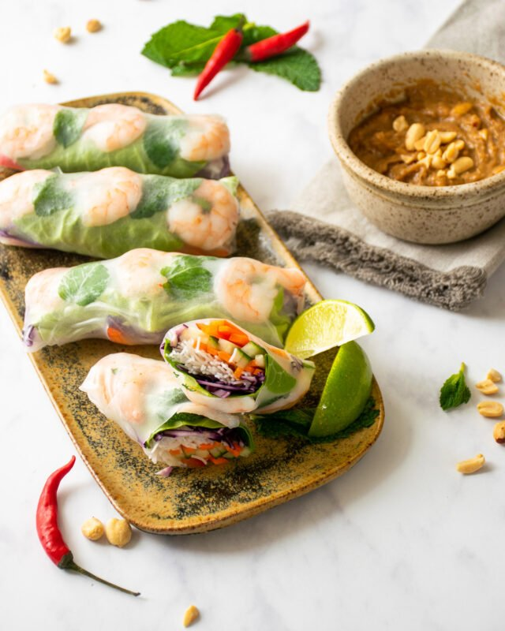

Vietnamese Spring Rolls With Dipping Sauce

Vietnamese Spring
Rolls Recipes
These Vietnamese spring rolls are the perfect recipe for beating the heat. Poached shrimp, rice
noodles, herbs,
and lettuce are rolled into a thin rice wrapper. Serve with the sweet and sour dipping sauce.
Ingredients
- ¼ cup white vinegar
- ¼ cup fish sauce
- 2 tablespoons white sugar
- 2 tablespoons lime juice
- 1 clove garlic, minced
- ¼ teaspoon red pepper flakes
- 2 ounces rice vermicelli
- 8 large shrimp, peeled and deveined
- 4 rice wrappers (8.5 inch diameter)
- 2 leaves lettuce, chopped
- 3 tablespoons finely chopped fresh mint leaves
- 3 tablespoons finely chopped cilantro
- 4 teaspoons finely chopped Thai basil
Steps
- Whisk vinegar, fish sauce, sugar, lime juice, garlic, and red pepper flakes together in a small bowl. Set
the dipping sauce aside.
- Fill a large bowl with room temperature water. Add rice vermicelli and soak for 1 hour.
- Bring a large pot of water to a boil. Drop in shrimp and cook until curled and pink, about 1 minute. Remove
the shrimp and drain. Slice each shrimp in half lengthwise. Transfer rice vermicelli noodles to the pot of
boiling water and cook for 1 minute. Remove and drain in a colander. Immediately rinse the vermicelli with
cold water, stirring to separate the noodles.
- To assemble the rolls, dip 1 rice wrapper in a large bowl of room temperature water for a few seconds to
soften. Place wrapper on a work surface and top with 4 shrimp halves, 1/4 of the chopped lettuce, 1/2 ounce
vermicelli, and 1/4 each of the mint, cilantro, and Thai basil. Fold right and left edges of the wrapper
over the ends of the filling and roll up the spring roll. Repeat with remaining wrappers and ingredients.
Cut each roll in half and serve with dipping sauce.
Return to the Homepage